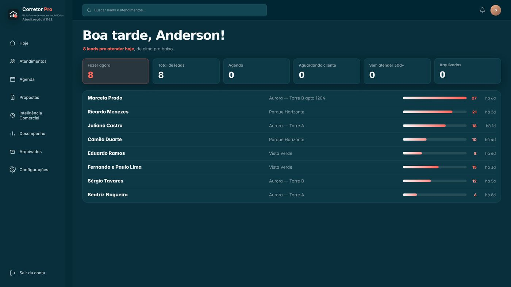
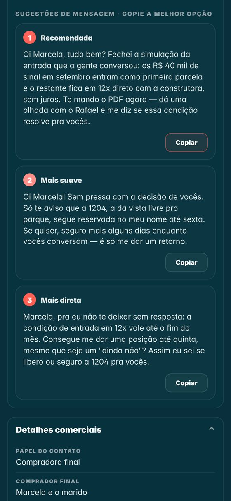
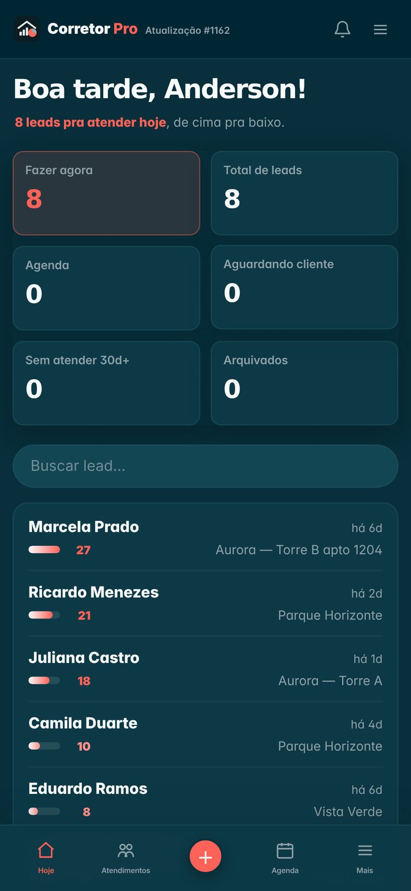

Mais do que organizar clientes.
O Corretor Pro analisa conversas, interpreta intenções, sugere respostas
estratégicas e organiza automaticamente seus atendimentos para que você
dedique seu tempo ao que realmente importa: vender.


Não apenas a última mensagem. A inteligência entende todo o contexto da negociação.
Mensagens estratégicas personalizadas, prontas para enviar ao cliente.
Exporte novamente a conversa. O atendimento continua exatamente de onde parou.
Nunca esqueça um cliente. O retorno certo, na hora certa.
Desenvolvido especificamente para o dia a dia do corretor.
CRMs armazenam informações. O Corretor Pro ajuda você a conduzir negociações.
Entre na conversa do cliente que você quer analisar — pode ser qualquer conversa, nova ou antiga.
Toque nos três pontinhos (⋮) no canto de cima, à direita, e escolha “Exportar conversa”. Em alguns celulares essa opção fica dentro de “Mais”.
Quando o WhatsApp perguntar, toque em “Incluir mídia” — é isso que traz os áudios junto.
Exporte COM mídia — o áudio diz o que o cliente querO celular abre a lista de compartilhar. Toque no ícone do Corretor Pro — ele aparece ali porque o app está instalado na sua tela inicial.
Pronto: a conversa chega sozinha, e você não precisa fazer mais nada.
Se o ícone não aparecer, salve o arquivo no celular e, dentro do Corretor Pro, toque em “Escolher o arquivo da conversa” — funciona sempre.
É aqui que você tocaEm 30 a 60 segundos o Corretor Pro lê a conversa inteira — inclusive os áudios — e monta o diagnóstico: quem falou por último, o que ficou pendente, qual a objeção principal e o melhor horário de contato.
O histórico fica organizado numa linha do tempo, e as respostas sugeridas já saem prontas, no seu tom.
São três opções de resposta: a recomendada, uma mais suave e uma mais direta. Escolha a que tem mais a ver com o momento, toque em Copiar e cole no WhatsApp do cliente.
Depois de enviar, marque o atendimento e agende o retorno — o app lembra por você no dia certo.

A fila do dia, já em ordem: quem atender primeiro, de cima pra baixo.
O registro de quem você atendeu, dia a dia — nada se perde.
Retornos e compromissos combinados com o cliente, no dia certo.
O Cérebro: seu jeito de vender, seus produtos e suas regras. As respostas saem no seu tom — e ele aprende com você.
Seus números: atendimentos, propostas e evolução da carteira.
Exporte sempre com mídia. Os áudios são onde o cliente diz o que realmente quer — e o Corretor Pro escuta todos.
Reexporte a mesma conversa depois de novas mensagens. O atendimento continua exatamente de onde parou, sem duplicar nada.
Aconteceu algo fora do WhatsApp? Visita, ligação, proposta — registre como observação no lead. Entra na próxima análise.
Aponte a câmera do celular para o código quando ele estiver disponível e veja, em poucos minutos, o Corretor Pro trabalhando numa negociação de verdade.